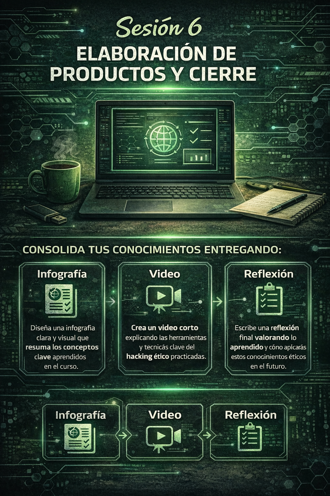

Actividad 3: Reflexión final
Responde:
- ¿Qué has aprendido durante esta actividad?
- ¿Qué te ha resultado más difícil?
- ¿Cómo aplicarías estos conocimientos en un entorno real?
Introducción
En esta sesión integrarás todo lo aprendido a lo largo de la Situación de Aprendizaje.
Elaborarás los productos finales y reflexionarás sobre los conocimientos adquiridos en el análisis de sistemas y ciberseguridad.
Actividad 1: Infografía
Elabora una infografía interactiva en la que expliques los conceptos trabajados durante las sesiones:
- Procesos y servicios
- Permisos y SUID
- Puertos y conexiones
- Reconocimiento con herramientas
- Acceso remoto
La infografía debe ser clara, visual y fácil de entender.
Actividad 2: Vídeo
En parejas, graba un vídeo en el que muestres una práctica realizada durante las sesiones.
En el vídeo deberás:
- Ejecutar comandos
- Explicar qué estás haciendo
- Justificar por qué es relevante en ciberseguridad
Evaluación
Esta sesión será evaluada mediante:
- Entrega de los productos finales
- Participación en la sesión
- Reflexión final del alumnado
Se valorará la capacidad para integrar los conocimientos adquiridos y comunicarlos de forma clara.